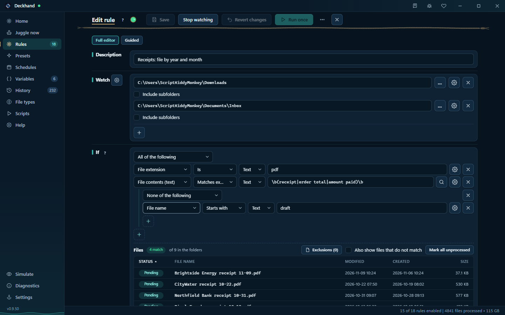
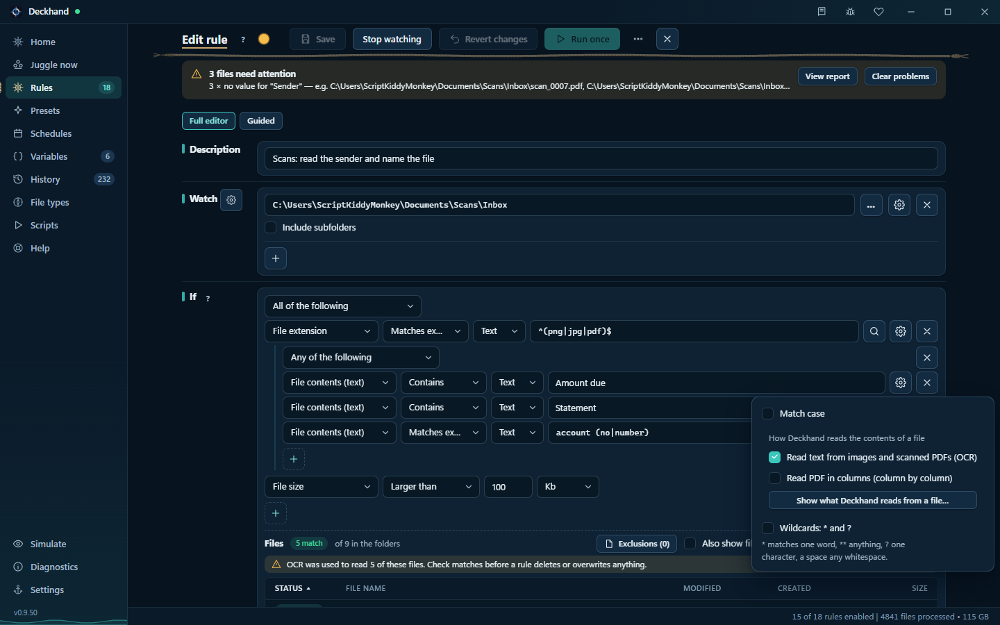
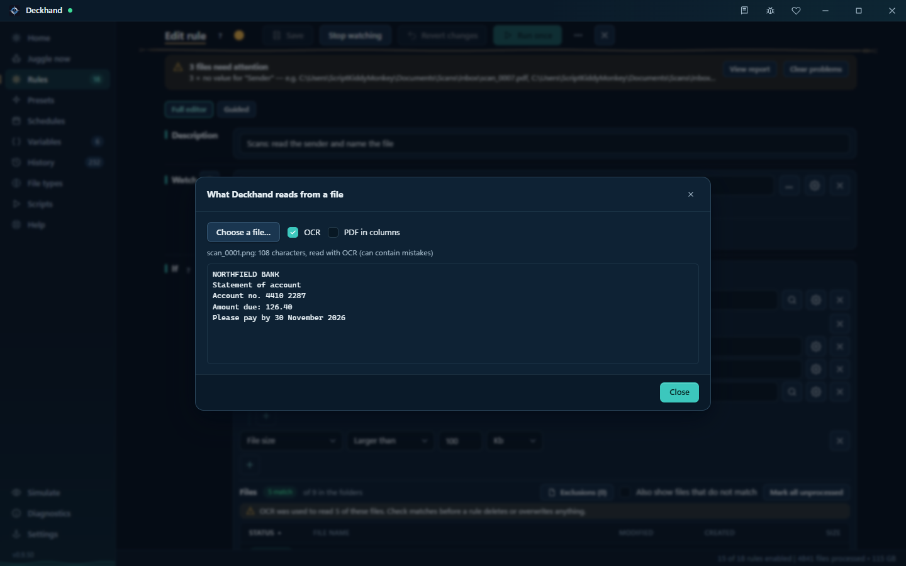

Conditions reference
Every condition kind, its operators and how matching behaves.
This page lists what the If section can test. Names in the app may be worded a little differently. The names in code are the ones used in the draft JSON format.
Groups
| Condition | Meaning |
|---|---|
all | Every item must match (AND). An empty group never matches. |
any | At least one item must match (OR). An empty group never matches. |
not | The item must not match. Not of an empty or unfinished item is false. |
all_files | Matches every file. |
Groups nest freely.
Text
Compares a text value such as the name, extension, path, folder name or file contents.
| Operator | Meaning |
|---|---|
is, is_not | Equals, does not equal |
contains, not_contains | Contains, does not contain |
starts_with, ends_with | Begins or ends with |
regex, not_regex | Matches or does not match a regular expression |
empty, not_empty | Has no value, or has a value |
- Case-insensitive unless you choose case-sensitive.
- Wildcards (when on):
*stays within a word,**spans anything,?is one character, a space is any whitespace. - The value can hold
{variable}tokens, and you can compare with another variable. - Regular expressions are .NET-style: lookaround, backreferences and named groups work. The extension is written without the dot.
- Negative operators are true when the value is missing. Positive operators are false.
The next screenshot is the rule Receipts: file by year and month. Its second row is a File contents (text) condition that matches the regular expression \b(receipt|order total|amount paid)\b. The magnifier button at the end of such a row opens the expression tester.


In the tester, Open preview file... loads a real file, here a receipt PDF. Every match in its text is highlighted and the extracted value is shown under the text. Press Use these settings to keep the expression.

Number
For size and numeric metadata.
| Operator | Meaning |
|---|---|
gt, ge, lt, le | Greater than, at least, less than, at most |
eq, ne | Equal, not equal |
between | Between two values |
Size takes bytes, kb, mb or gb, where 1 kb is 1024 bytes. A blank or non-numeric value never matches.
Date
| Operator | Meaning |
|---|---|
older_than, newer_than | Compared with now, using an amount and a unit: minutes, hours, days, weeks, months or years |
before, after, on | Compared with a fixed date, YYYY-MM-DD, optionally with HH:MM |
Dates you can test include created, modified, accessed and, for pictures, the date taken. Empty or unfinished rows never match.
File type
Matches by file type. Use a group name such as image, video, audio, archive, pdf, document, spreadsheet, presentation, program, code, font, script, installer, diskimage, cad3d, data, database, webpage, email or temp. You can also give a specific Category\Subtype, such as Microsoft Office\Word. A group matches every extension in it, so you do not list them one by one. Negate it to match everything else.
Duplicate
Matches a copy of a file that is not the one being kept. Duplicates are files with the same size and SHA-256. You choose which folders to compare (the watched folder by default), whether to include subfolders, and whether to keep the oldest or the newest. One copy always stays. Empty files are never duplicates.
Folder age
Compares the age of the newest file in the file's own folder, with older_than or newer_than, an amount and a unit. Optionally includes subfolders. Useful for cleaning up folders nobody has touched for months.
Metadata
Use the variables in Variables and transforms: PDF fields, audio tags and picture details. PDF, audio and picture fields are empty for other kinds of file.
File contents
There is one File contents (text) entry in the variable list (contents in a draft). It reads the text of any supported file:
- plain text files, PDF, Word, Excel, PowerPoint and OpenDocument files, which have text of their own;
- pictures and scanned PDFs, through Windows OCR.
The gear at the end of the row holds the options for that one condition, as the next screenshot shows for the rule Scans: read the sender and name the file:
| Option | What it does |
|---|---|
| Read text from images and scanned PDFs (OCR) | On by default. OCR is used only when a file has no text of its own. Matches found this way are marked in the preview, and a file is never deleted, recycled or overwritten because of recognised text unless you approve that file. |
| Read PDF in columns (column by column) | Reads a PDF with several columns one column after the other, instead of line by line across the page. |
| Show what Deckhand reads from a file... | Opens a window where you pick a file and see the exact text Deckhand reads from it with these options. |
In the screenshot the gear of the second File contents row of the Scans rule is open.


The window behind Show what Deckhand reads from a file... has its own OCR and PDF in columns ticks, so you can compare the options on one file. Here it shows a scanned bank statement. Because the text came from OCR, the line under the file name says so and warns that it can contain mistakes.


In a draft, the options are a contents object on the condition: { "ocr": true, "columns": false }. A default is left out. The old contents.columns variable is no longer in the list, but rules and drafts that use it still work: it is read as File contents with Read PDF in columns on. OCR is no longer a switch in Settings or on the rule. Each File contents condition has its own OCR option, and Settings keeps only the OCR language and a button that clears the OCR cache. See Settings.
Wait
sleep waits up to 300 000 milliseconds, but only in real runs, not in previews.